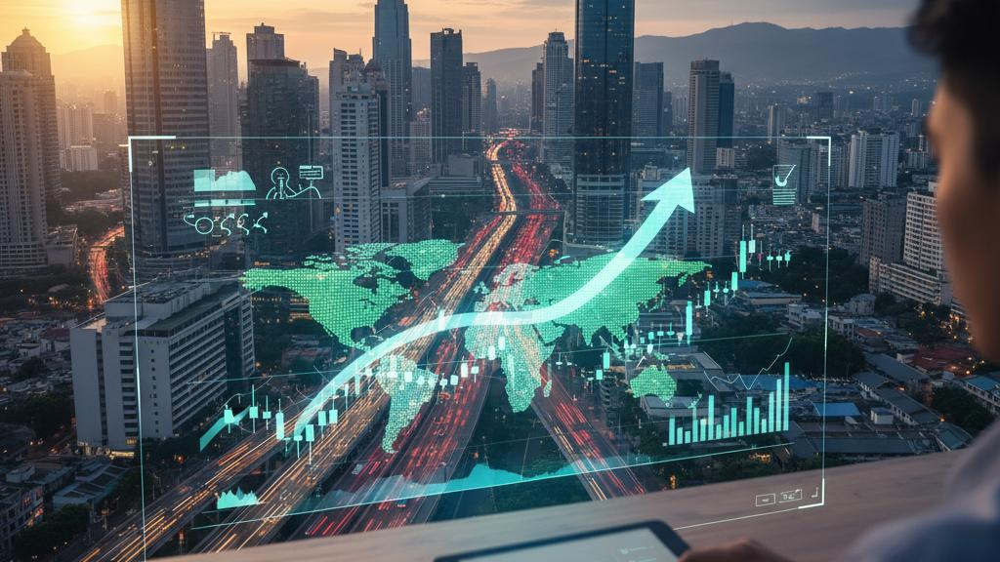
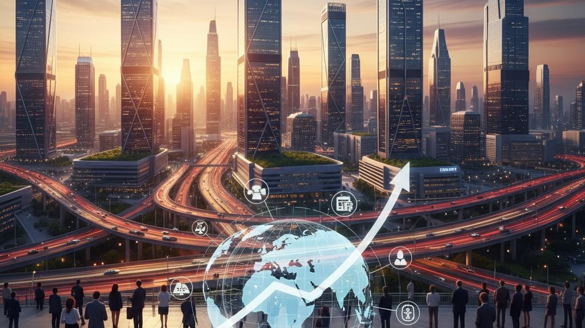

【2026年版】FPが本気でおすすめする投資信託！新興国株式インデックスが「大化け」する明確な理由
こんにちはりょうです。
2026年、
結局どの投資信託を買えば一番資産を増やせるの？
「オルカン」や「S&P500」だけでいいって聞いたけど、
本当にそれだけでいいの？
そんな疑問や不安を抱えているあなたに向けて、
今回は2026年に僕が本気でおすすめする投資信託をご紹介します。
結論からお伝えします。
僕が今、
最も「大化け」するポテンシャルを秘めていると考えているのは、
新興国株式インデックスファンドです。
「え？
新興国？
あの中国とかインドが入っているやつ？」
「いやいや、
新興国なんて値動きが激しくていつ暴落するか分からないし、
結局米国株に負け続けてるじゃん」
そう思った方、
正直に言ってその感覚は、
今の相場には当てはまらないかもしれません。
もし今、
あなたのポートフォリオが先進国（米国や
オルカンなど）だけに偏っていて、
新興国の比率が極端に低いのだとすれば、
大きなチャンスを丸ごと逃してしまう可能性があります。
実は、
2025年の新興国株式インデックスファンドは、
円建てで約35％もの爆発的な上昇を記録しているんです。
2025年の他の主要指数の成績と比べてみましょう。
- 飛ぶ鳥を落とす勢いだった
「FANG＋」：約18％
- 投資の王道「オルカン」：約23％
- 好調だった「日経平均」：約28％
なんと、
これらの超人気指数すべてを、
新興国株式のパフォーマンスが大きく上回ったんです。
「新興国はずっと低迷している」という古い
イメージを持っている人が多い中で、
実は水面下で強烈な逆襲が始まっているんですよ。
僕自身、
数年前からコツコツと
「eMAXIS Slim 新興国株式インデックス」に投資を続けています。
正直に言うと、
コロナショック以降の数年間は中国の不動産バブル崩壊などの影響をまともに受けて、
評価額はずっとマイナス圏をさまよっていました。
「あー、
これ失敗したかな…」と何度も思いました。
でも、
最初のアイデアを信じて貫きました。
結果、
ここ最近の潮目の変化は
マジで凄まじいものがあります。
なぜ今、
新興国がこれほど強いのか。
具体的に何を買えばいいのか。
今回は、
新興国株式インデックスの魅力を徹底的にお話ししていきます！
新興国株式インデックスファンドの正体。初心者が知るべき基礎知識

まずそもそも、
「新興国株式インデックスって何？」という基本的なところから解説しましょう。
ここを理解しておかないと、
何に投資しているか分からないまま大切なお金を預けることになってしまいますからね。
僕がおすすめし、
実際に自身でもコツコツ購入している商品は、
「eMAXIS Slim 新興国株式インデックス」です。
他にも様々な会社から似たような商品が出ていますが、
手数料や運用体制を考慮すると、
正直これ一択でいいと思っています。
このファンドが連動を目指している
ベンチマーク（物差し）は、
「MSCIエマージング・マーケット・インデックス」です。
これは世界中の投資家が新興国市場の動きを見る際に最も使っている代表的な指数です。
では、
その中身はどうなっているのでしょうか？
新興国と言っても世界中にたくさんの国がありますが、
結論から言うとこの指数の約75％（4分の3）は
アジアの国々で構成されています。
具体的には、
中国、
インド、
台湾、
韓国の4カ国がメインプレイヤーです。
ここにブラジル、
サウジアラビア、
南アフリカ、
メキシコといった国々が加わり、
全体で20カ国以上の新興国に分散投資されています。
「韓国って、
もう立派な先進国じゃないの？」と思った方、
めちゃくちゃ鋭いです。
経済や技術レベルで見れば韓国は先進国ですが、
指数のルール上、
まだ新興国カテゴリーに入っているんです。
しかしこれは、
僕たち投資家にとってはラッキーなことです。
なぜなら、
サムスン電子のような世界的超優良企業に、
新興国という枠組みで安く投資ができるからです。
ここで投資に最も重要な
「コスト」の話をしておきましょう。
新興国ファンドは本来、
各国の法律や税制、
通貨がバラバラで、
市場の取引量も少ないため、
運用コストがめちゃくちゃ高くなりがちです。
実際、
海外ETF（EEM）の経費率は0.7%前後とかなり高めです。
しかし、
日本の投資信託はマジで優秀です。
「eMAXIS Slim 新興国株式インデックス」の信託報酬は、
なんと年率0.15%程度
（実質コストを含めても0.2%台）に収まっています。
個人で世界20カ国以上に個別に投資しようとすれば、
手数料や手間だけでとんでもないことになります。
それをボタン一つ、
わずか0.2%台の手数料で
プロが代行してくれると考えれば、
めちゃくちゃ安いですよね。
組み入れ銘柄の上位を見ると、
以下のようになっています。
1. TSMC（台湾：半導体）
2. テンセント（中国：ネットサービス・ゲーム）
3. サムスン電子（韓国：半導体・スマホ）
4. アリババ（中国：ネット通販・クラウド）
5. リライアンス・インダストリーズ
（インド：エネルギー・通信）
いかがでしょうか？
どれも世界中で名前を聞かない日はないほどの超一流メガテック企業ばかりです。
今の新興国インデックスは、
昔のような「資源やエネルギー頼みのオールドエコノミー」ではありません。
最先端のハイテク企業が集まる、
バリバリの成長ファンドという側面を持っているんです。
なぜ今、新興国株式が伸びるのか？驚くべき成長性と圧倒的な割安感
では、
なぜ僕が2026年に向けて新興国株がさらに伸びると確信しているのか。
その理由は極めてシンプルです。
まだ圧倒的に割安だからです。
投資の基本は「安く買って、
高く売る」これに尽きます。
どれほど素晴らしい企業でも、
株価が高すぎる時に買っては利益を出しにくくなります。
現在、
米国株（S&P500など）のPER
（株価収益率）は27倍近くまで買われており、
歴史的に見てもかなり「お高め」な状態です。
一方で、
新興国株全体のPERは11倍程度という激安水準に放置されています。
実力に対して人気がなさすぎる状態なんです。
ここで、
中国株や新興国株を買う上で、
避けて通れない「感情」の話をします。
ニュースを見ると、
台湾有事の懸念や不動産不況、
日中対立などネガティブな情報ばかりで、
「中国なんかに絶対投資したくない！」と拒否反応を示す方も多いと思います。
日本人としてそうした感情を抱くのは無理もありません。
もし、
ストレスを感じながら投資をするのが生理的に無理な場合は、
無理して新興国株を買う必要はありません。
投資は自分の幸せのためにやるものなので、
そういう方はオルカンだけを愚直に買っていれば十分です
（オルカンにも中国株は3％ほど含まれています）。
しかし、
あなたが「感情を一旦横に置いて、
投資家としての利益を最優先に考える」のであれば、
新興国株は絶対に押さえておくべきチャンスです。
なぜなら、
中国企業はかつての
「安かろう悪かろう」のパクリ大国から、
完全な内製型テック大国へと劇的な進化を遂げているからです。
中国企業は14億人という桁違いの人口
（巨大な内需）を抱えています。
アリババで買い物し、
WeChatで決済し、
TikTokで動画を観る。
この巨大なサイクルが国内だけで完結しており、
そこから生み出される膨大な
ビッグデータをAIに食わせることで、
サービスの進化スピードが半端ではないんです。
さらにEV（電気自動車）大手のBYDは、
バッテリーから半導体、
モーターといった主要部品をすべて自社で内製化し、
圧倒的なコスト競争力と技術力で
テスラをも脅かしています。
これほどのポテンシャルを持った巨大企業たちの株価が、
PER11倍という格安の値段で落ちている。
もし市場の懸念が少し
でも和らいで世界中のマネーが逆流し始めれば、
株価が2倍になってもおかしくない水準なんです。
AI半導体の心臓部！TSMCとサムスンが支えるAIブームの恩恵
さらに見逃せないのが、
AI半導体ブームの恩恵を新興国株が
ダイレクトに受ける構造になっている点です。
新興国株式インデックスの約10〜12％を占める第1位の銘柄は、
台湾の「TSMC」です。
AIブームの主役である
NVIDIAがどれほど注目されていても、
そのNVIDIAの超高性能AIチップを実際に製造しているのはTSMCです。
AppleのiPhoneの心臓部となるチップも、
TSMCがなければ作れません。
TSMCの決算を見ると、
売上高が前年比20.5％増、
純利益はなんと35％増と、
笑ってしまうほど儲かっています。
AI革命が続く限り、
TSMCの製造ラインは常にフル稼働です。
さらに、
韓国のサムスン電子やSKハイニクスも、
AIの高速処理に不可欠な高性能メモリ
「HBM」で世界シェアの大半を握っています。
つまり、
「AIが伸びる＝新興国のハイテク企業が伸びる」という強固な構造が出来上がっているのです。
米国の一流テック企業
（NVIDIAなど）をPER40〜50倍という高い株価で買うよりも、
それらを陰で支えるTSMCやサムスン電子を、
新興国インデックスを通じて割安な株価で保有する方が、
はるかに堅実でリターンも大きくなる可能性があります。
このファンドを買うということは、
「TSMCの確実な成長」と
「中国株の割安系正」の両取りを狙うという、
マジで合理的な戦略なんです。
新興国株をポートフォリオに組み入れる「3つの投資パターン」

「よし、
新興国株の魅力はわかった！
明日から全財産を突っ込むぞ！」
というのは、
ちょっと待ってください。
落ち着きましょう。
毎回お伝えしていますが、
資産形成はできるだけ
シンプルに運用するのが王道です。
値動きの激しさに一喜一憂したくない方は、
ポートフォリオを複雑にする必要はありません。
S&P500やオルカンを信じてそれだけを買い続けるのも立派な正解です。
新興国株はリターンが大きい反面、
値動きも荒い特徴があります。
今後10年以上、
どっしりと腰を据えて投資を続ける覚悟がある方に向けて、
僕がおすすめする
「3つの組み合わせパターン」をご提案します。
パターン①：【オルカン ＋ 新興国】
オルカンをメインにしつつ、
新興国インデックスを
トッピングで10〜20％加えるスタイルです。
オルカンにも新興国は10％ほど含まれていますが、
世界の実体経済（GDP）に占める新興国の
シェアは約6割に達しています。
別枠で少し新興国を足してやることで、
より世界経済の実態に近く、
将来の成長に期待した
ポートフォリオに仕上げることができます。
パターン②：【S&P500 ＋ 新興国】
米国一強のS&P500をコアにしつつ、
リスクヘッジと更なる成長エンジンのために新興国を加えるスタイルです。
米国株と新興国株は異なる値動きをする傾向があり、
通貨の分散（ドルとアジア通貨など）にもなります。
米国の割高感が意識され、
成長が鈍化した時のためのめちゃくちゃ理にかなった保険になります。
パターン③：【S&P500 ＋ 日本株 ＋ 新興国】
これは、
僕が実際に何年も前から実践している
ベースのパターンです。
世界の中心である米国を抑えつつ、
デフレ脱却が進む自国の日本株、
そして長期的な爆発力を秘めた新興国株を組み合わせます。
それぞれの地域特性や成長サイクルが異なるため、
リスク分散効果がめちゃくちゃ高く、
何より運用していて面白いのが特徴です。
僕は年初の新NISA（成長投資枠）でこれらの比率を
コントロールしています。
若い人や、
リスクを多く取って大きな資産を作りたい人は新興国を30%近くまで増やしても面白いでしょう。
逆に、
守りを重視したいシニア世代の方は無理にトッピングせず、
新興国が最初から10%入っている
オルカン一本でいくのが健全です。
大切なのは、
一度決めた比率を崩さないことです。
「上がったから買い増し、
下がったから売る」ではなく、
下がった地域を買い足し、
上がった地域を一部売却する
「リバランス」を淡々と行うことこそが、
長期投資で勝つための鉄則です。
新興国株式投資に関するよくある質問（Q&A）
Q. 中国やインドの個別株を直接買った方が儲かりますか？
A. 結論、
個人投資家が新興国の個別株に手を出すのはおすすめしません。
新興国の個別企業は、
現地の法改正や政府の規制、
企業の不正リスクなどが日本や米国に比べて格段に高いです。
情報収集も難しいため、
個人で勝負するのはマジでハイリスクです。
eMAXIS Slimのような
「丸ごと分散されたインデックスファンド」で、
間接的にパッケージとして保有するのが最も安全で賢い選択肢です。
Q. 新興国インデックスはどの口座で買うべきですか？
A. 新NISA口座
（つみたて投資枠・成長投資枠）を最大限に活用してください。
「eMAXIS Slim 新興国株式インデックス」は、
SBI証券や楽天証券といったネット証券であれば、
新NISAの「つみたて投資枠」
「成長投資枠」のどちらでも購入可能です。
運用益にかかる約20%の税金が完全に非課税になるため、
新NISA枠を優先的に使って運用しましょう。
まとめ：感情を切り離し、数字と成長性で賢く果実を得よう
今回は、
2026年以降の主役になるかもしれない
「新興国株式インデックス」の魅力について熱く語らせていただきました。
最後に重要なポイントを振り返りましょう。
1. 2026年は新興国の逆襲期: 米国株の割高感が強まる中、
圧倒的に割安（PER11倍）な新興国に
マネーが還流する可能性が高い。
2. 最強のメガテック構成: AI半導体の心臓部
「TSMC」や「サムスン電子」、
巨大テックの「テンセント」「アリババ」など、
世界を動かす超優良企業が網羅されている。
3. eMAXIS Slimで超低コスト運用: 信託報酬0.15%程度という激安コストで、
個人では不可能な20カ国以上の分散投資がボタン一つで完結。
4. 感情と投資を切り分ける: 中国などへの政治的・感情的なアレルギーは一旦脇に置き、
純粋な数字と成長性で
チャンスを判断することが成功への道。
5. コア・サテライトの徹底: 資産のすべてを新興国にするのは大怪我の元。
オルカンやS&P500をコア（核）としつつ、
10〜20％をスパイスとして加えるのがベスト。
新興国投資は値動きが
ハラハラする場面もありますが、
「実力に対して割安」であることは最大の武器になります。
今だからこそ視線を少し横にずらし、
新興国の未来に種を蒔いておく。
10年後に「あの時新興国を仕込んでおいて本当に良かった！」と笑える日を信じて、
コツコツ積み立てていきましょう。
「自分の場合は、
具体的に新興国株を何％混ぜるのが
ベスト？」「老後資金を守りつつ増やすためのポートフォリオを一緒に考えてほしい」という方は、
ぜひ僕の公式LINEに登録して気軽に
メッセージを送ってくださいね。
登録するだけでお金の知識が
アップデートされる情報を、
無料で定期的にお届けしています！